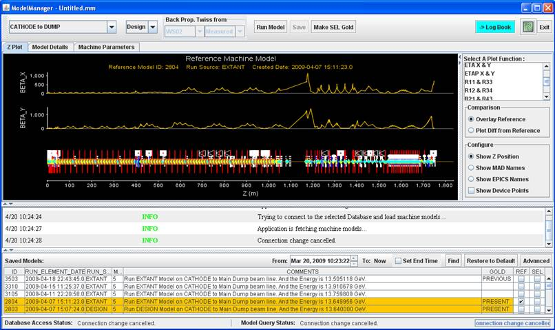
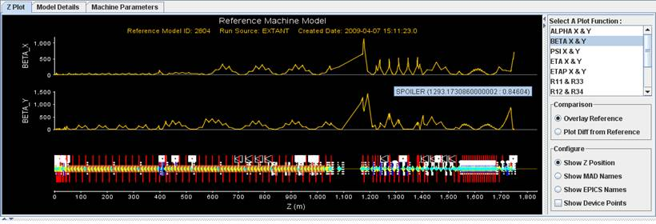
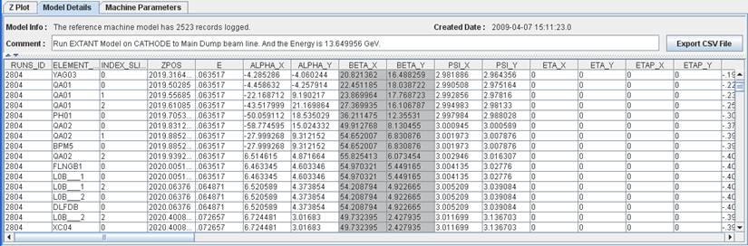
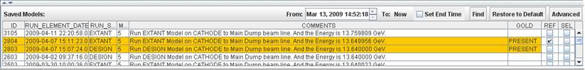
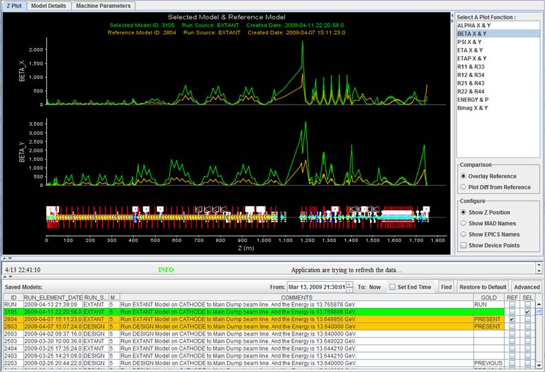
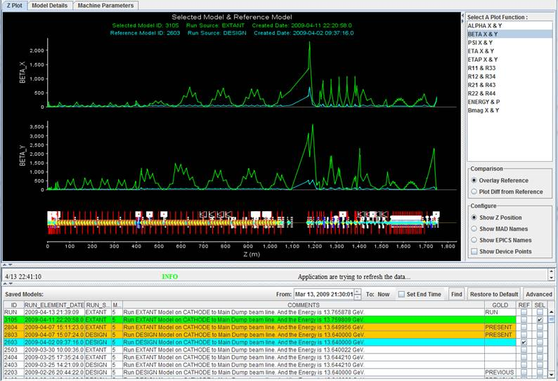
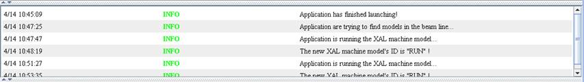

Contents
Display Models in the Database
Capture Model Data Panel to e-Log
Introduction
This application provides a graphical user interface (GUI) for viewing existing model run data in the Oracle database, running DESIGN and EXTANT machine model, and tagging a model in the database as GOLD. To run the application, the following is required: a Java runtime environment (JRE) version 5 and above installed, access to the SLAC network (SLACDEV or SLACPROD database), and Java Channel Access (JCA) for EXTANT machine parameter acquisition.
Overview
After launching, the application is displayed as Fig. 1. The start-up time for production network is about 10 seconds including the initial database connection and fetching. The β functions for EXTANT GOLD model for the selected beam-line (in the upper left corner) from Oracle database is selected and plotted.

Fig. 1: Model Manager Application
There are three major parts for the GUI: a run-model tool bar at the top, model data display in the middle and a list of available models saved in the database at the bottom. At top right corner, a “->Log Book” button is provided for capturing screen snapshot(s) to electronic logbook. A message panel in between the data display and model list shows messages related to the application. At the very bottom, a status bar shows the status for current or last action. In this application, all the table columns can be sorted. Simply click the table column label you want to sort once will sort the table in ascendant way; click the label again will sort in opposite way; and click it the third time will restore the original order for that column.
Fig. 2: Top tool bar for model run. From left to right: beam-line chooser, model mode chooser (design/extant), Twiss parameter back-propagate reference point and mode (design/extant) for extant model run, Run Model button, Save to database button, and Make SEL Gold (Selected Model) button.

Fig. 3: Model data display panel. There are 3 tabbed panels for the data display: Z plot, Model Details and Machine Parameters. Shown in this figure is the Z Plot panel, the left-hand side is for data plot and right-hand side is for plot configuration.

Fig. 4: Model Details panel. The Model Details tab shows a table of all the model result. The data plotted in the Z Plot panel are highlighted here. In the Comment field, one can edit the comment before saving the model to the database.

Fig. 5: The Machine Parameters tab shows the magnet and RF parameters used in the model calculation.

Fig. 6: Saved models in the database table. A time range selector is provided for fetching time-filtered models. Restore to Default button conveniently reset the application to its initial state.
Display
Models in the Database
If you would like to view any saved models in the database, you can first select the beam-line you are interested in from the top left corner of the app (see Figs.1 and 2). The default beam-line is CATHODE to DUMP line. All the available models within the time range specified in the time range selector (see Fig. 4) is listed in the bottom table. The two present GOLD models, one for DESIGN and one for EXTANT, are color coded in orange in the table.
In the Saved Models table, one can select any one or two models to plot. If select two models, in the Comparison configuration panel two options are offered: Overlay Reference and Plot Diff from Reference. Overlay Reference simply plots selected curve(s), one selected from the REF column and an optional second model from the SEL column. The default color for REF data is sky blue and the default color for SEL is green. If the selected model (either from REF or from SEL column) is labeled as GOLD, that data set is plotted in orange. See Fig. 7 for example.
 
Fig.7: Plotting two models for comparison.
Other features in the plot panel include a) mouse-over tooltip, depending on which horizontal axis label is selected, moving the mouse over the synoptic display widget will show MAD name or EPICS name of the device; b) mouse-over in the data plot will show data point number; c) zoom in/out of the plot.
Run
Model
This application also offers the ability of running either DESIGN or EXTANT model. To run a model, you need to focus on the top tool bar (see Fig. 2). First select the beam-line you want to use. Available beam-line choices include: CATHODE to DUMP, CATHODE to 52SL2, CATHODE to 135 MeV SPECT DUMP, and CATHODE to GUN SPECT DUMP. Default beam-line is CATHODE to DUMP. You then select between Design and Extant as the model input source; the default is Design. If you select to run Extant, the Back Propagate Twiss from option is then available. There are five back propagate reference points available to choose: WS02, OTR2, WS12, WS28144 and WS32; the default is WS32. Also, you can choose to use either Measured Twiss parameters (from the latest emittance measurement at that point and cached in PVs) or Design ones (calculated from Design model).
Typically a model run for extant CATHODE to DUMP line takes less than a minute. Same line for design model takes about 10 seconds.
Save
a Model to Database
If you are happy with the model you just ran, you can click the Save button to load this set of model data to the Oracle database. After you click the Save button, you will be prompted for login name and password for the database (see Fig. 8). Default database for MCC is SLAC Production DB. The upload process takes up to ~10-20 seconds depending on the beam-line. During the data upload, most of the GUI is still clickable except the top tool bar related to the model run part. After a model is successfully uploaded, there will be a pop-up message to acknowledge. The model list table will then update to reflect the model just uploaded. At this moment, a second process is running in the background to update all the AIDA names.

Fig. 8: Connection pop-up windows for security purpose while uploading a model or changing a GOLD tag.
Make
a Selected Model GOLD
If you would like to make any model in the database the GOLD (or default) one, you can click the Make SEL GOLD button. The GOLD model is the one AIDA defaults to, i.e. without supplying the RUN ID in the query. Note that you will also be prompted to enter login ID and password for this one.
Capture Model Data Panel to e-Log
The ->Log Book button near the top right corner can capture the data display panel and send it as an image to the physics e-log. There will be more automated save-to-elog features added to this app in the future, e.g. post a message when a model is uploaded or a GOLD tag is changed.
Messages and Status Bar
An expendable Message panel shows all essential messages for the app (see Fig.9). This is the standard Message window for all high-level applications.

Fig. 9: Message panel.
Further
Help
There will be a web link here…